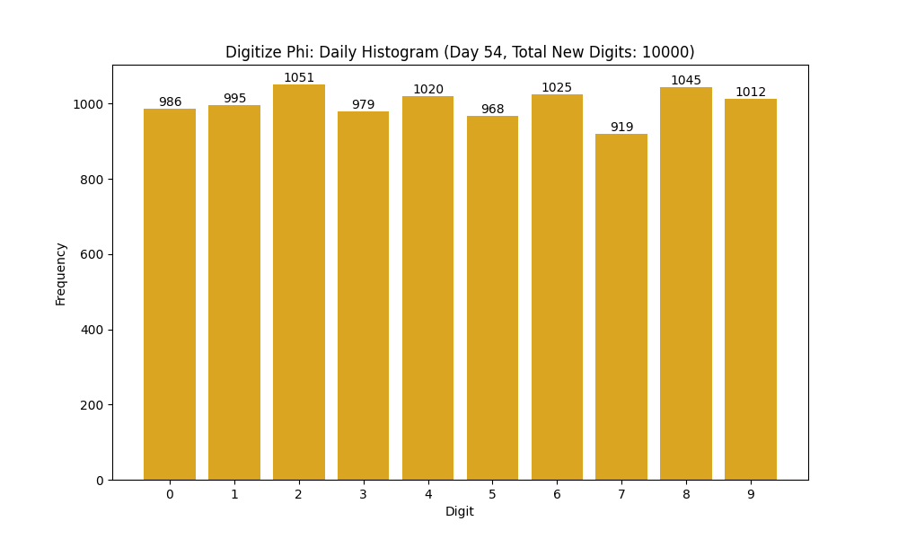
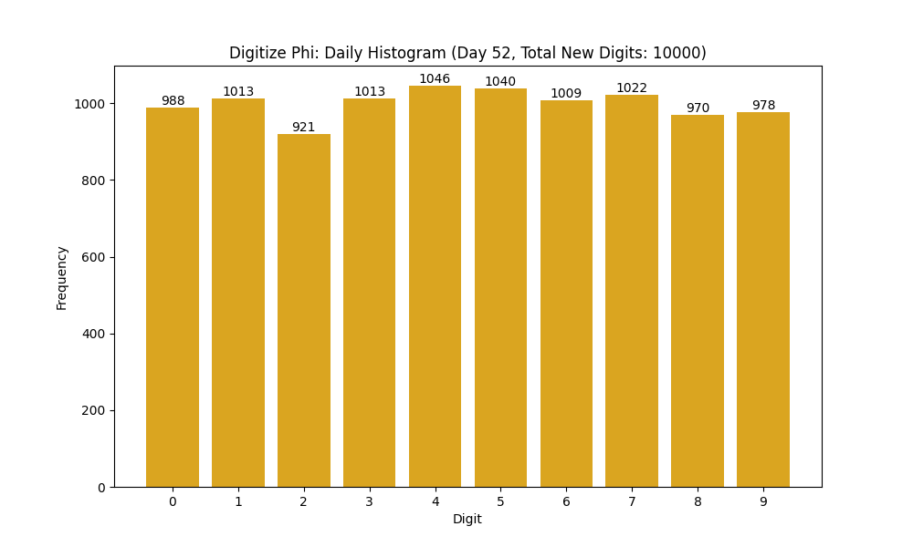
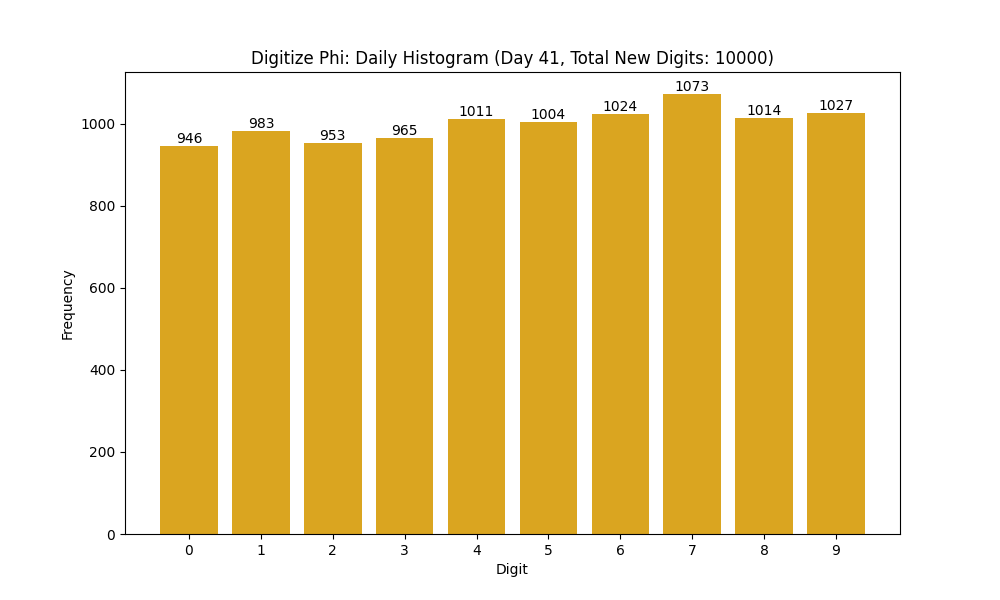

Digitize φ Project: Archives
← Back to the Main Project Page
Day 080: Digits 790,001 - 800,000
September 13, 2025
Day 079: Digits 780,001 - 790,000
September 12, 2025
Day 078: Digits 770,001 - 780,000
September 11, 2025
Day 077: Digits 760,001 - 770,000
September 10, 2025
Day 076: Digits 750,001 - 760,000
September 09, 2025
Day 075: Digits 740,001 - 750,000
September 08, 2025
Day 074: Digits 730,001 - 740,000
September 07, 2025
Day 073: Digits 720,001 - 730,000
September 06, 2025
Day 072: Digits 710,001 - 720,000
September 05, 2025
Day 071: Digits 700,001 - 710,000
September 04, 2025
Day 070: Digits 690,001 - 700,000
September 03, 2025
Day 069: Digits 680,001 - 690,000
September 02, 2025
Day 068: Digits 670,001 - 680,000
September 01, 2025
Day 067: Digits 660,001 - 670,000
August 31, 2025
Day 066: Digits 650,001 - 660,000
August 30, 2025
Day 065: Digits 640,001 - 650,000
August 29, 2025
Day 064: Digits 630,001 - 640,000
August 28, 2025
Day 063: Digits 620,001 - 630,000
August 27, 2025
Day 062: Digits 610,001 - 620,000
August 26, 2025
Day 061: Digits 600,001 - 610,000
August 25, 2025
Day 060: Digits 590,001 - 600,000
August 24, 2025
Day 059: Digits 580,001 - 590,000
August 23, 2025
Day 058: Digits 570,001 - 580,000
August 22, 2025
Day 057: Digits 560,001 - 570,000
August 21, 2025
Day 056: Digits 550,001 - 560,000
August 20, 2025
Day 055: Digits 540,001 - 550,000
August 19, 2025

Day 054: Digits 530,001 - 540,000
August 18, 2025
Day 053: Digits 520,001 - 530,000
August 17, 2025
Day 052: Digits 510,001 - 520,000
August 16, 2025
Day 050: Digits 500,001 - 510,000
August 15, 2025
Day 050: Digits 490,001 - 500,000
August 14, 2025
Day 049: Digits 480,001 - 490,000
August 13, 2025

Day 048: Digits 470,001 - 480,000
August 12, 2025

Day 047: Digits 460,001 - 470,000
August 11, 2025
Day 046: Digits 450,001 - 460,000
August 10, 2025
Day 045: Digits 440,001 - 450,000
August 09, 2025
Day 044: Digits 430,001 - 440,000
August 08, 2025
Day 043: Digits 420,001 - 430,000
August 07, 2025
Day 042: Digits 410,001 - 420,000
August 06, 2025
Day 041: Digits 400,001 - 410,000
August 05, 2025
Day 040: Digits 390,001 - 400,000
August 04, 2025
Day 039: Digits 380,001 - 390,000
August 03, 2025
Day 038: Digits 370,001 - 380,000
August 02, 2025
Day 037: Digits 360,001 - 370,000
August 01, 2025
Day 036: Digits 350,001 - 360,000
July 31, 2025

Day 035: Digits 340,001 - 350,000
July 30, 2025
Day 034: Digits 330,001 - 340,000
July 29, 2025
Day 033: Digits 320,001 - 330,000
July 28, 2025
Day 032: Digits 310,001 - 320,000
July 27, 2025
Day 031: Digits 300,001 - 310,000
July 26, 2025
Day 030: Digits 290,001 - 300,000
July 25, 2025

Day 029: Digits 290,001 - 300,000
July 24, 2025
Day 028: Digits 280,001 - 290,000
July 23, 2025
Day 027: Digits 270,001 - 280,000
July 22, 2025
Day 026: Digits 260,001 - 270,000
July 21, 2025
Day 025: Digits 250,001 - 260,000
July 20, 2025

Day 024: Digits 240,001 - 250,000
July 19, 2025

Day 023: Digits 230,001 - 240,000
July 18, 2025

Day 022: Digits 220,001 - 230,000
July 17, 2025

Day 021: Digits 210,001 - 220,000
July 16, 2025

Day 020: Digits 200,001 - 210,000
July 15, 2025

Day 019: Digits 190,001 - 200,000
July 14, 2025

Day 018: Digits 180,001 - 190,000
July 13, 2025
Day 017: Digits 170,001 - 180,000
July 12, 2025

Day 016: Digits 160,001 - 170,000
July 11, 2025
Day 015: Digits 150,001 - 160,000
July 10, 2025

Day 014: Digits 140,001 - 150,000
July 09, 2025

Day 013: Digits 130,001 - 140,000
July 08, 2025

Day 012: Digits 120,001 - 130,000
July 07, 2025

Day 011: Digits 110,001 - 120,000
July 06, 2025

Day 010: Digits 100,001 - 110,000
July 05, 2025

Day 009: Digits 90,001 - 100,000
July 04, 2025

Day 008: Digits 80,001 - 90,000
July 03, 2025

Day 007: Digits 70,001 - 80,000
July 02, 2025
Day 006: Digits 60,001 - 70,000
July 01, 2025
Day 005: Digits 40,001 - 50,000
June 30, 2025

Day 004: Digits 30,001 - 40,000
June 29, 2025

Day 003: Digits 20,001 - 30,000
June 28, 2025
Day 002: Digits 10,001 - 20,000
June 27, 2025

Day 001: Digits 1 - 10,000
June 26, 2025